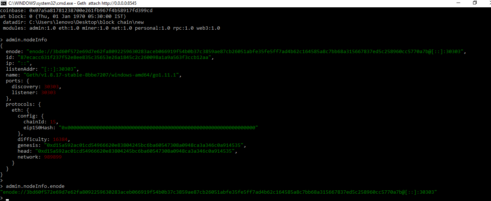
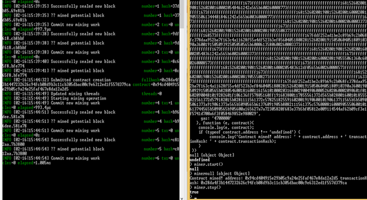
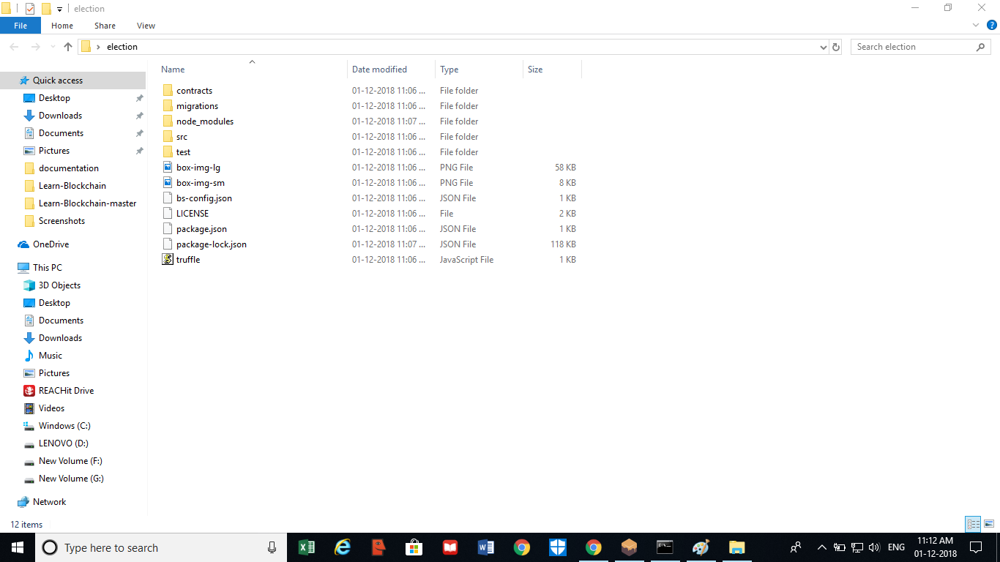

1. What is Ethereum Blockchain ?
Beyond Bitcoin & first generation decentralized applications
Although normally associated with Bitcoin, blockchain science has many other purposes that go way past digital currencies. In fact, Bitcoin is only one of quite a few hundred purposes that use blockchain technology today.
Until relatively recently, building blockchain applications has required a complex background in coding, cryptography, mathematics as well as significant resources. But times have changed. Previously unimagined applications, from electronic voting & digitally recorded property assets to regulatory compliance & trading are now actively being developed and deployed faster than ever before. By providing developers with the tools to build decentralized applications, Ethereum is making all of this possible.
In the Ethereum blockchain, instead of mining for bitcoin, miners work to earn Ether, a type of crypto token that fuels the network. Beyond a tradeable Cryptocurrency Ether is also used by application developers to pay for transaction fees and services on the Ethereum network.
There is a second type of token that is used to pay miners fees for including transactions in their block, it is called gas, and every smart contract execution requires a certain amount of gas to be sent along with it to entice miners to put it in the blockchain.
2. How to create Private Ethereum Blockchain ?
step:1-First you need to download geth in your device you can download geth from

You can download geth as your requirement and your operating system.
Step:2- After download geth you need to check that geth is perfectly installed or not you can check it by just typing geth in your command prompt and geth starts working.

Step:3- Then you need to create a folder name the folder example(blockchain) and inside the folder you need to create you genesis file it is the extension of json file.

What is a genesis file ?
The genesis block is the start of the blockchain, and the genesis.json is the file that defines it. It is like the “settings” for your blockchain. For example, the chain configuration, level of difficulty to mine blocks, etc.
There are 4 values(config, difficulty, gasLimit, alloc) you need to specify in genesis.json.
A quick look at genesis file.
Step:4- This is your extension file .json genesis.json is the first block of the blockchain it is used to start your blockchain. It contains config chain id difficulty you gas limit etc. it is the first block of private ethereum blockchain.

Step:5 open command prompt and then call the folder you created and call you genesis block from the command: geth -datadir=./new init genesis.jsonThis command will initialize your genesis block
Automatically create new folder in the blockchain folder which contains geth and your keystore.

Step:6 after that start your blockchain(node) with following command
geth --datadir ./new --networkid 989899 --rpc --rpcaddr 0.0.0.0 --rpcport 8545 --rpcapidb,net,web3,admin,eth,miner,personal --rpccorsdomain
This command includes admin minner gives your private blockchain network id and port number and also creates one miner to mine your private blockchain.

CD Desktop
CD Blockchain
geth --datadir=./new init genesis.json
geth --datadir ./new --networkid 989899 --rpc --rpcaddr 0.0.0.0 --rpcport 8545 --rpcapidb,net,web3,admin,eth,miner,personal --rpccorsdomain “*”

This command geth attach http://0.0.0.0:8545 is to attach geth through javascript console.
Step:-7 in the below image there is two account created in command prompt one account has balance of 185 ether after words transaction is done and 85 ether is transfer from first account to second account and then the second account has 85 ether.

> Personal.newAccount()
>miner.start()
>miner.stop()
>eth.getBalance(eth.coinbase)
//Wei>web3.fromWei(eth.getBalance(eth.coinbase),”ether”)
>eth.sendTransaction({from: &0x643betf4tie8yiw9r6f6&bcsp to: 7nbsp 0xh7e3t473bfewtfr3674ry84gf, value, :web3.toWei(85,"ether")})
// it is Transfer some ether one account to another account.Step:-8 as seen above the transaction is done to see the transaction properly you need to write command eth.getTransaction (“enter the transaction receipt”) after entering the command you can see the Full block with block hash,block number,gas,gas price,hash,input etc you can see in the transaction.

How to set up a multi-node private Ethereum blockchain on your windows:-
Step:9- Through enode you can add nodes in your computer. And admin can add nodes in the computer as per the requirement.

So node1 can add node 2 through command admin.addPeer(“the enode of second node enter here “) so both the nodes are connected with each other and if mining starts in node 1 then in node 2 mining will start in node 2.
In the get CLI(Command Line Interface) enter the below command to get the Node-id.
admin.nodeInfo.enode
Step:10- in the below image there is two nodes open and we can connect nodes through admin.addPeer(“enter the peer”) after adding both the peer when you start the mining in the first block you can see the mining occurs in the second block also it happens only when you connect the nodes.

3. What is Smart Contract ?explained all Function ?
Smart contracts use blockchain technology to facilitate the exchange of money, property, information or anything that people deem appropriate to initiate a smart contract for.
The beauty of the decentralized nature of blockchain based peer to peer transactions means that these smart contracts don’t require anything in the way of a middleman. Traditionally individuals or institutions such as banks and solicitors were required to facilitate legally binding contracts. Smart contracts allow individuals to bypass these costly and often slow middlemen and agree on a contract directly.

Smart contracts are applications that run on the Ethereum Virtual Machine(public Blockchain). This is a decentralized “world computer” where the computing power is provided by all those Ethereum nodes. Any nodes providing computing power are paid for that resource in Ether tokens.

Autonomy – Decentralized nature of the blockchain contracts underlying these smart contracts as well as the nature of the contract themselves means no outside party is required in the process.
More secure – Blockchain technology creates unalterable ledgers which provide definitive proof of transactions. It also relies on encryption while operating as a secure peer to peer transaction system.
Faster speeds – Without the need for a middleman, speeds are much faster.
Increased accuracy – Humans make mistakes, smart contracts are designed not to.
Cost savings – Automated process lowers costs significantly.
Trust – Unalterable ledgers mean transactions are set in stone
Backup – Data storage devices can fail. Smart contracts duplicate all transactions so that all parties have a record of the transitions. The likelihood that all parties are going to suffer data storage failures is practically nonexistent.
4. Most Popular Features of ICO Smart Contract ?
This essay focuses on some recent adoptions becoming popular in the blockchain community while writing smart contracts for ICOs. It skips basic recommendations like ERC20 and enlist some essential features for ICO smart contracts.
In use in many successful ICOs they should result in a higher probability to succeed. However I would advise you to only adopt features which are essential to your ICO. As more logic can be used in smart contracts to implement more security features like timeouts, spending limits, multisig, vaults etc. Although, the more logic in the smart contract the bigger the attack surface and the more likely that bugs are introduced that risk undermining the security feature.
Capped Contracts
Min cap (also known as Soft cap) is the minimum financial goal of a crowdsale. In Layman’s terms, it’s the minimum amount at startup, which is deemed sufficient to carry on with a project.
Max cap (also known as Hard cap) is the maximum desired financial goal from an ICO. It’s the amount that the project needs to develop or improve their product. The team usually believes this amount will cover the successful development of the project until the moment it becomes profitable.
Mintable Tokens
In real world, a mint is an industrial facility to manufacture coins that can be used as currency.
In the world of cryptocurrency too, It is often necessary to mint new tokens during crowd sales. Consider the case when the number of tokens issued at the beginning of crowdsale have been completely consumed and you still have investors coming in for your crowd sale, you need to mint tokens now. The standard ERC20 token does not cover this functionality authority. This is powerful because you can normally decide on the number of total signatures that can sign a transaction for a given account and then decide how many should be in the subset of those signatures that have to sign before a transaction is accepted. This is also known as m-of-n, where m could be say 3, the number of signatures that are required to send before the transaction is even accepted, and n could be 7, the total number of signatures that can sign if they wish. The signatures in n must be predetermined at the time of the multisig account creation, and m will always be a subset of n.
Finalizable Contracts
Finalizable contract allows owners to add logic of extra work once the crowdsale is finished. It is always used once the crowdsale is finished to add some extra finalization work to the contract. It has an internal finalization function which can be overridden to add finalization logic. The overriding function should call super.finalization() to ensure the chain of finalization is executed entirely.
Upgradable Contracts
Upgradable contracts are divided into two types of contracts- Upgrade Agent and Upgrade Token.
Upgrade Agent transfers tokens to a new contract. Upgrade agent itself can be the token contract or a middleman contract doing the heavy lifting.
Upgrade Token contract provides a token upgrade mechanism where the users can opt-in amount of tokens to the next smart contract revision.
Refundable Contracts
In case the soft cap decided at the beginning of your crowdsale is not reached, you need to refund your investor's money. Open-zeppelin does it by creating a refund vault, which stores money while the crowdsale is in progress. It refunds money if the crowdsale fails, otherwise forwards it if successful.
This is done using a pull mechanism, while keeping the Re-Entry problem into consideration to avoid attacks from malicious contracts/users.
Time Vault Contracts
This contract helps establish time limits, before which a user won’t be able to withdraw his tokens. It is useful to stop vindictive investors to take their investment back before a crowdsale ends. Although mostly it is used to keep a check on owners of the crowdsale, stopping them to run away with their investors money. It was first implemented by Lunyr where the founders received 15% of issued tokens and they had their tokens locked in a time vault contract for 180 days.
Burnable Tokens/Freezing Tokens
After a crowdsale ends, what should happen to the remaining unsold tokens? You can use them as a rewarding mechanism, profiting to your reliable customers or you can burn them, which can eventually lead to an increase in overall value of your tokens.
Another popular option these days is freezing them. It is similar to keeping them untouched for a particular interval of time This is useful in case you want to have multiple funding rounds.
For instance you can sell 25% of your tokens now, raising money and then a year later have a 2nd crowdfunding round at higher token rates after you're idea's success
5. How to deploy smart contract in Ethereum Blockchain? & How to create your own Crypto-Currency with Ethereum ? (Using Smart contract)
1.> First Created Genesis File on Notepad (json Format)
{
"config": {
"chainId": 989899,
"homesteadBlock": 0,
"eip155Block": 0,
"eip158Block": 0
},
"difficulty": "200",
"gasLimit": "99999999999999999",
"alloc": {
}
}
2.> Open Command Prompt :-
CD desktop>
CD desktop>User>”Folder Name”
CD desktop>User>Folder Name> "geth –datadir=./chaindata init genesis.json"
CD desktop>User>Folder Name> geth –datadir ./chaindata --networkid 989899
3.>Open New Command Prompt :-
Cd desktop>User>geth attach

After that Created your own Account
personal.newAccount()miner.start()
miner.stop()
eth.getBalance(eth.coinbase)
25000000000000000000
web3.fromWei(eth.getBalance(eth.coinbase))
>15The XDC-E smart contract is availabel on the following link .copy the smart contarct .
Click to XDCeWrite Your Smart Contract on Remix Comipler :-

After that copy on ABI (Web3deploy) :-

Copy of the ->var Coincontract =web3.eth.contract………. etc.
Copy of the ->var coin= coinContract.new …………. Etc.

After that Submitted contract is creation

Calling our Smart Contract
Now that our smart contract is deployed on our private Ethereum Blockchain, we can invoke our smart contract! There are only two things one needs:
1. The ABI definition of the Smart Contract.
1. The ABI definition of the Smart Contract.

Contract is deployed :-

With that you have deployed your smart contract to your own private Ethereum network!!!!!!!!
6. How Do Account Work ?
One of the massive variations in blockchain applications vs traditional internet functions is that accounts are managed by means of the community itself, not always the individual application. For example, in a normal internet utility like Gmail, you create a username and password that is saved in a database owned by Google. When you use the blockchain, you have an account that represents you as a consumer of the complete network, now not simply the application. Your account is recognized by using an address, which is a illustration of its public & personal key pair.
An Ethereum account address looks like this:
0x4a10a580a10a0fbe3fc1624c1d348838184d7664
this is the `from` account from the above code example. This account address is represented by a hex string. It has a related account balance in Ether. Whenever you run the code example, you are in actuality sending cash from one person on the network to every other user.
7.How to Create dapp on Ethereum Blockchain ?
Today I'm going to show you how to build your first decentralized application, or dApp, on the Ethereum blockchain. I'll show you how to write your first Ethereum smart contract, where we'll hold an election between two candidates. We'll write tests against the smart contract, deploy it to the Ethereum blockchain, and develop a client-side application that allows accounts to cast votes
In order to build our dApp, we need a few dependencies first.
Node Package Manager (NPM)
The first dependency we need is Node Package Manager, or NPM, which comes with Node.js. You can see if you have node already installed by going to your terminal and typing: node -v
Truffle Framework
The next dependency is the Truffle Framework, which allows us to build decentralized applications on the Ethereum blockchain. It provides a suite of tools that allow us to write smart contacts with the Solidity programming language. It also enables us to test our smart contracts and deploy them to the blockchain. It also gives us a place to develop our client-side application.
You can install Truffle with NPM by in your command line like this:
npm install -g truffle
Ganache
The next dependency is Ganache. a local in-memory blockchain. You can install Ganache by downloading it from the Truffle Framework website. It will give us 10 external accounts with addresses on our local Ethereum blockchain. Each account is preloaded with 100 fake ether.
Metamask
The next dependency is the Metamask extension for Google Chrome. In order to use the blockchain, we must connect to it (remember, I said the block chain is a network). We’ll have to install a special browser extension in order to use the Ethereum block chain. That’s where metamask comes in. We’ll be able to connect to our local Ethereum blockchain with our personal account, and interact with our smart contract.
We’re going to be using the Metamask chrome extension for this tutorial, so you’ll also need to install the google chrome browser if you don’t have it already. To install Metamask, search for the Metamask Chrome plugin in the Google Chrome web store. Once you’ve installed it, be sure that it is checked in your list of extensions. You’ll see the fox icon in the top right hand side of your Chrome browser when it’s installed. Reference the video walk through if you get stuck!
Now let's create a project directory for our dApp
Create a folder in the desktop and name the folder election
Cd:desktop Mkdir election Cd election

Now that we're inside our project, we can get up and running fast with a Truffle box. We'll be using the Pet Shop box for this tutorial. From within your project directory, install the pet shop box from the command line like this
Let's see what the pet shop box gave us:
